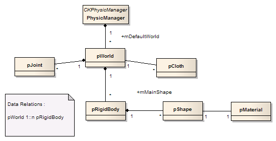
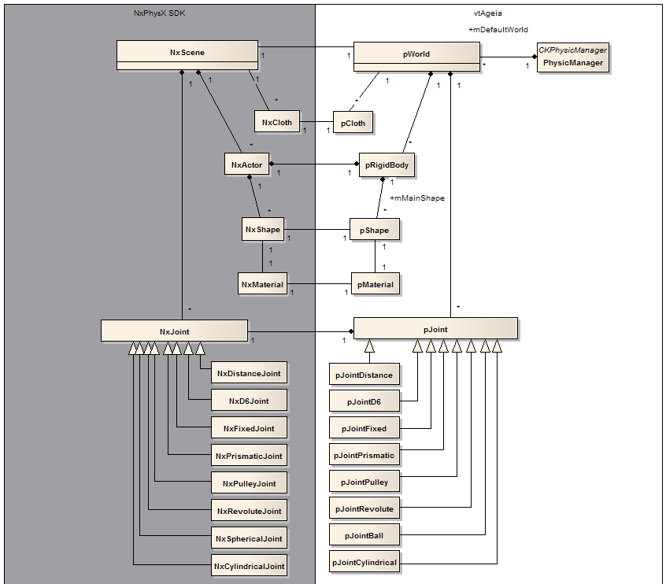

Main Page
Related Pages
Modules
Namespaces
Classes
PhysX for Virtools
»
Guide
VSL Object Relations
Relation between physical objects:

Relation between Virtools and PhysX objects:

See also
PhysicManager
pWorld
pRigidBody
pJoint
pFactory
Generated on Wed Feb 3 18:57:23 2010 for vtPhysX by
1.6.1